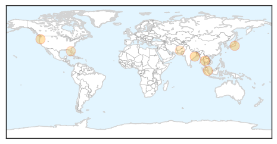
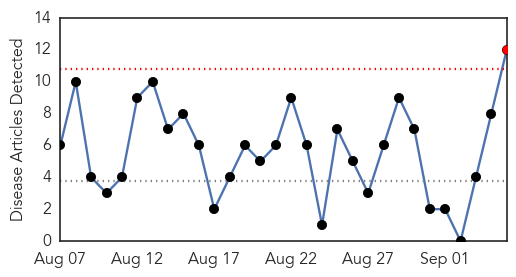
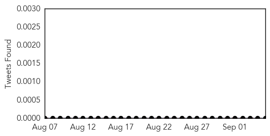

Dengue Fever
30-Day Web Trend
0 alerts, 0 warnings
30-Day Twitter Trend
0 alerts, 0 warnings

Article Locations
Article Confidences
Top Articles:
- 0.961
- Tata asked to clear stagnant water
- 0.958
- Dengue Vaccine May Cause Short-Term Increase
- 0.952
- Use of dengue vaccine may cause short-term spikes in its prevalence
- 0.923
- Man who had not visited Yoyogi Park confirmed to have dengue
- 0.819
- Dengue Vaccine Shows Promise In Latin America
- 0.691
- Mosquito-borne illnesses advisory issued by Department of Health in Suwannee County
- 0.643
- Another five polio cases surface
Top Tweets:
- 0.698
- Flavivirus news: Rare outbreak in Tokyo as WHO warns of spread of dengue fever - KHON2: USA TOD... http://t.co/3cmrT7ZSM3 pathogenposse
- 0.651
- Flavivirus news: 18 confirmed cases of dengue fever Martin County - TCPalm: TCPalm18 confirmed ... http://t.co/POq63SILYv pathogenposse
West Nile Virus
30-Day Web Trend
1 alerts, 0 warnings

30-Day Twitter Trend
0 alerts, 0 warnings

Article Locations

Article Confidences

Top Articles:
- 0.979
- Oklahomans with West Nile virus now total six
- 0.978
- Glenn County confirms West Nile virus death
- 0.970
- West Nile virus at highest level ever in California mosquitoes
- 0.947
- Worst Outbreak Ever of West Nile Virus in California
- 0.945
- Four more samples test positive for West Nile virus
- 0.944
- West Nile virus cases down because of cooler summer temperatures
- 0.941
- First human case of the West Nile Virus detected in Carter County
- 0.896
- Oswego County finds EEE virus in swamps
- 0.808
- Harris County has record high of West Nile virus
- 0.783
- The Daily News of Newburyport: News
- 0.686
- Human case of Eastern equine encephalitis confirmed in Mobile resident
- 0.532
- 14th case of West Nile confirmed in Montgomery County
Top Tweets:
-
No tweets found for Sep 05, 2014